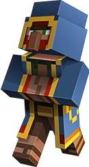

Oh viajero de tierras cúbicas, detén tu andar y presta atención. Soy yo, el VENDEDOR AMBULANTE, figura esquiva de la noche y portador de cosas que no se siembran ni se minan. Recorro el mundo sin rumbo fijo, guiado por los vientos del azar y la necesidad de comerciar. Aparezco cuando el sol se esconde y la luna se alza, entre sombras y susurros. No permanezco mucho: dos días y dos noches, y luego desaparezco sin dejar rastro, como el eco en una cueva vacía. Me hallarás cerca, sin previo aviso, siempre con mis dos llamas a los costados, atentas, altivas, y listas para escupir si las provocas.
